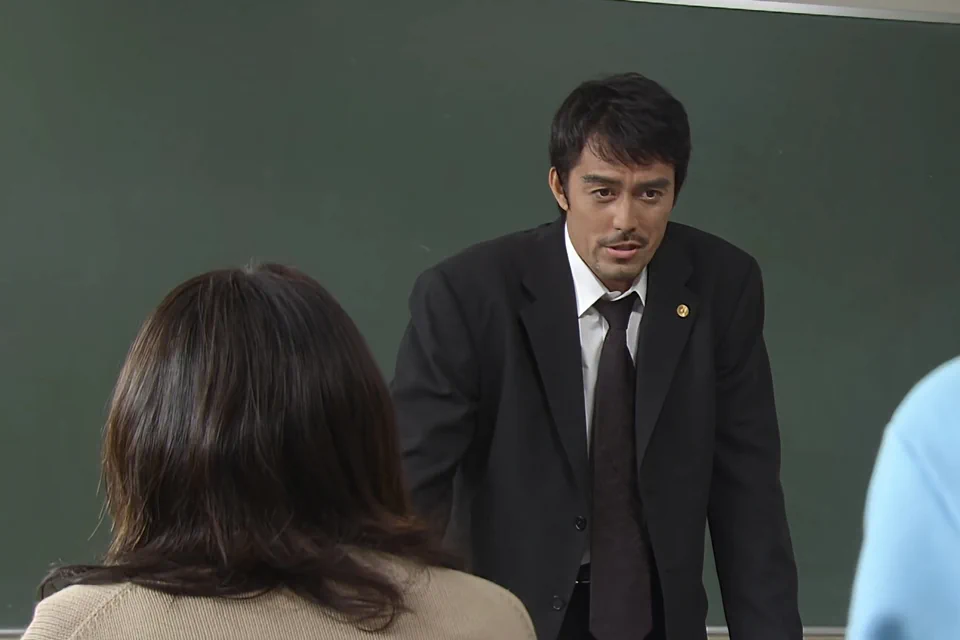

EPISODE 11 ／ 2005.09.16
お前らはもうバカじゃない！運命の合格発表！
みんな！特進クラスでの授業は今日で終わりだ。ついてはこの特進クラス最後の授業に当たり、一つだけみんなに言っておきたい。
大家听好！特进班的课到今天为止。既然是特进班的最后一课，有一件事，我想在大家面前说清楚。
前にも言ったと思うが、実はオレは東大が好きじゃねえ。東大に行ったってだけで人生成功したと思ってるやつら、目の前の相手が東大出たと知った瞬間に卑屈になるやつら、こりゃみんなゲス野郎だ。じゃそういうゲス野郎が大量に出てくるのはなぜか？
我以前应该也说过，其实我并不喜欢东大。仅凭进了东大就认为自己的人生成功了的人，得知眼前的人出身东大就立刻低人一等似的人，这些全是低劣的家伙。那么，为什么这种低劣的家伙会大批出现？
それはな、日本中の大半の連中がチャレンジもせずに、東大のことを超えられない壁だと決めつけてるからだ。勝手に祭り上げ、勝手に諦め、そして勝手にコンプレックスを抱く。成功している人間はそれはもともと才能があったからで、自分はもともと平凡な人間だから努力したって無理だ、そういう思い込みが人の人生をどれだけ窮屈に縛りつけてることか。
因为日本绝大多数人不肯挑战，事先就把东大断定为翻不过去的墙。自己把它捧起来，自己放弃，又自己生出自卑。成功的人本来就有才能；自己原本很平凡，就算努力也没用——这种成见把一个人的人生束缚得多么狭窄。
お前らが一年間ずっと頭に巻き続けたこのバカ鉢巻。ホントは一年間じゃねえはずだ。物心ついた時からお前らは心の中にずっとこのバカ鉢巻を巻いていた。だがな、もうすぐそのバカ鉢巻から自由になれる。お前らを縛りつけていたコンプレックスという名のたくさんの鎖を断ち切れる。
你们这一年来一直戴在头上的这顶“笨蛋”头巾。其实不该只有一年。从懂事起，你们心里就一直戴着这顶“笨蛋”头巾。但是，你们很快就能从这顶头巾中解放出来。能把那些名为自卑、捆住你们的诸多锁链切断。
桜木 建二SAKURAGI KENJI / RYŪZAN HIGH SCHOOL